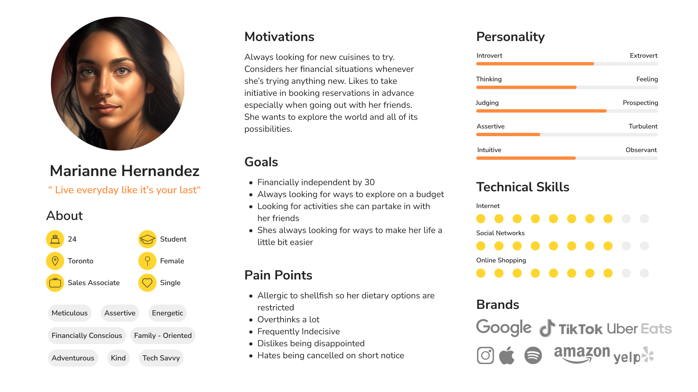
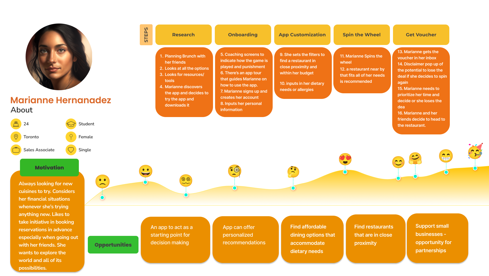
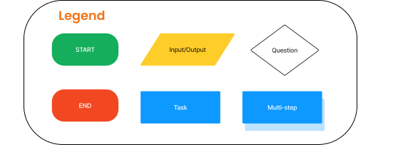
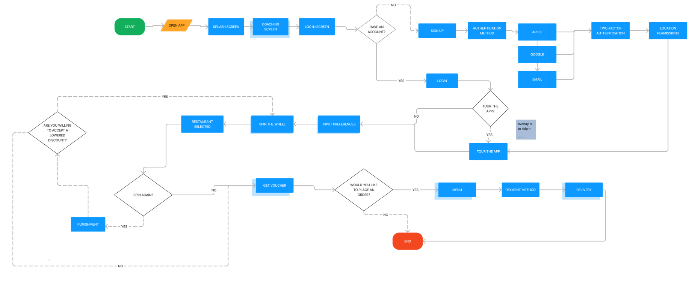
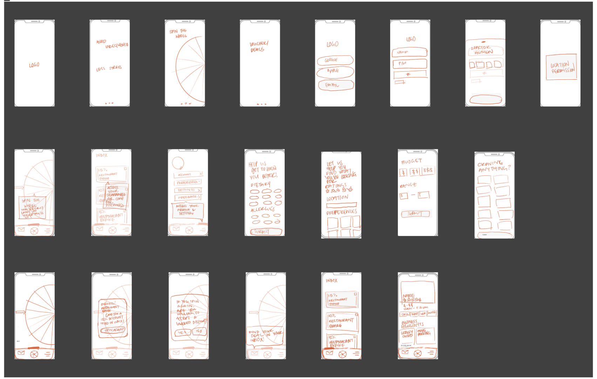
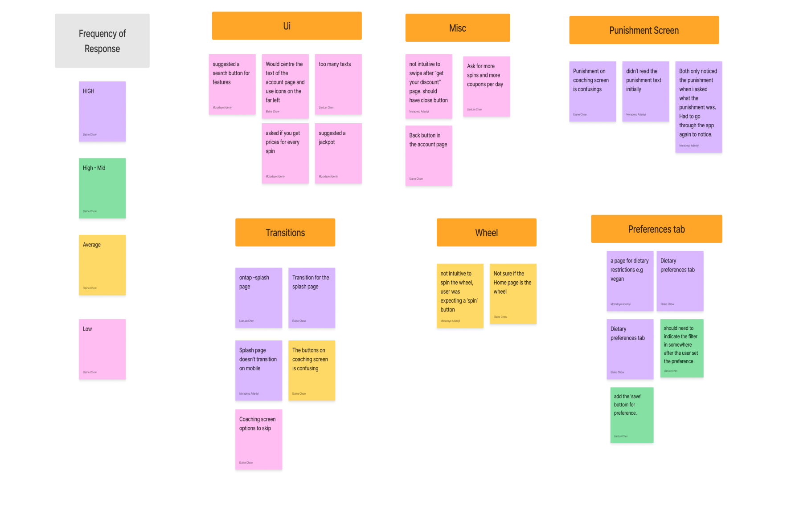

Definition and Ideation
Marianne likes trying new cuisines with her friends, but she often finds it difficult to choose restaurants that accommodate her dietary needs, without overcomplicating the decision making process.

Problem Statement
Many restaurant goers frequently order takeout or visit for social occasions. However, many often experience indecisiveness, and tend to over-complicate their research while looking for restaurants that fit their budget and accommodate their dietary needs. How might we make restaurant goers’ decision-making process to be more efficient by providing recommendations based on their dietary needs, budgets and proximity to ensure user satisfaction.
Journey Map
User Flow
 Lo-Fi Sketches
User Testing
High Fidelity Prototype